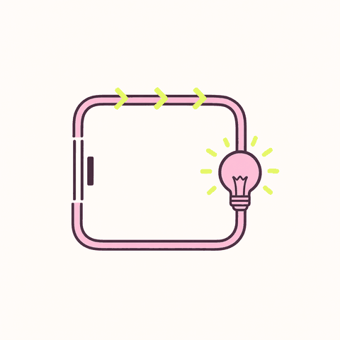

Circuits & Ohm’s Law
Circuits come down to three quantities — voltage is energy per unit charge, current is the rate of charge flow, and resistance measures opposition to that flow — linked by one equation, V = IR. This topic builds from that to real networks.
Set charges in motion and they do the work of the modern world. A steady flow of charge is a current, and the three quantities that describe any simple circuit — voltage, current and resistance — are tied together by the most useful equation in electrical engineering.

+ −Learning objectives
- Define current, potential difference and resistance, and state their SI units.
- Apply V = IR and P = IV to find any unknown in a component.
- Reduce a series, parallel or combination network to a single equivalent resistance.
- State which quantity is shared in series and which in parallel, and why.
- Calculate the current in, voltage across and power of every element in a circuit.
1.1 · Current, voltage and resistance
Voltage (volts) is energy transferred per unit charge. Current (amperes) is charge passing a point per second. Resistance (ohms) is how strongly a component opposes current.
Three definitions carry the whole chapter: current I = ΔQ/Δt in amperes (one coulomb per second is 6.24×1018 electrons/s), potential difference V = W/Q in volts (joules delivered per coulomb), and resistance R = V/I in ohms. For a uniform wire R = ρL/A — resistance grows with length and shrinks with cross-section.
- Current I — the rate of flow of charge
- I = ΔQ/Δt, measured in amperes (A). One ampere is one coulomb passing a point every second, about 6.24×1018 electrons per second.
- Potential difference V — energy per unit charge
- V = W/Q, measured in volts (V). One volt means one joule of energy transferred per coulomb that passes. A battery is a charge pump that gives each coulomb a fixed amount of energy.
- Resistance R — how much a component opposes current
- R = V/I, measured in ohms (Ω). For a uniform wire R = ρL/A: longer and thinner wires resist more.
Conventional current vs electron flow
Electrons in a metal drift from the negative terminal to the positive one — and very slowly, typically fractions of a millimetre per second. Conventional current is defined the other way round (positive charge moving + → −), a convention that predates the discovery of the electron. All circuit analysis uses conventional current. The signal, by contrast, travels at a substantial fraction of the speed of light, which is why a lamp lights instantly even though no individual electron travels from the switch.
Why the arrows point “the wrong way”
The tiny particles that actually move (electrons) drift from − to +, and they crawl. Circuit arrows point the other way — a naming habit from before electrons were discovered, and every rule on this page works with it. The lamp still lights instantly because the push travels through the wire almost at light speed; no single electron has to make the trip from the switch.
1.2 · Ohm’s law
Ohm’s law is V = IR. For a conductor that obeys it (many metals at constant temperature), doubling V doubles I, and doubling R halves I. Power is how fast energy is converted.
Strictly, Ohm’s law is a property of some materials, not a universal law. An ohmic conductor (a metal resistor at constant temperature) keeps R constant, so its I–V graph is a straight line through the origin with gradient 1/R. A filament lamp, a diode and a transistor are non-ohmic: their I–V graphs curve. V = IR still defines the resistance at any one point, but R is no longer a constant.
Electrical power
The three forms are the same equation with V = IR substituted in. Choose whichever uses the quantities you know: I2R is best for series circuits (same current), V2/R for parallel ones (same voltage).
A 12 V battery drives 3 A through a resistor. Find R and the power dissipated.
R = V/I = 12/3 = 4 Ω P = VI = 12 × 3 = 36 W check: I2R = 9 × 4 = 36 W ✓
1.3 · Series and parallel circuits
Series: one path, so resistances add — Req = R1 + R2 + … is always larger than the biggest single resistor. Parallel: extra paths, so 1/Req = 1/R1 + 1/R2 + … is always smaller than the smallest branch. Reduce a mixed network step by step.
In series the same current flows through every element and the voltages divide in proportion to R (one I in V = IR for all). In parallel every element shares the same voltage and the currents divide in inverse proportion to R — equivalently, conductances add: 1/Req = Σ 1/Ri. A mixed network reduces by collapsing the innermost series or parallel group first, then working outwards, redrawing at every step.
Series rules
- The same current flows through every component — there is nowhere else for the charge to go (Kirchhoff’s current law).
- Voltages add up to the supply: V = V1 + V2 + … (Kirchhoff’s voltage law).
- Resistances add: Req = R1 + R2 + … — always bigger than the largest resistor.
- The voltage divides in proportion to R: the biggest resistor takes the biggest share.
Parallel rules
- Every branch is connected directly across the supply, so the same voltage appears across each.
- Currents add up: I = I1 + I2 + …
- Conductances add: 1/Req = 1/R1 + 1/R2 + … — always smaller than the smallest branch.
- For just two resistors the shortcut Req = R1R2/(R1+R2) is faster. Equal resistors in parallel give R/n.
- Current divides inversely with R: the smallest resistor carries the most current.
Series. 4 Ω, 6 Ω and 10 Ω in series across 20 V.
Req = 4+6+10 = 20 Ω · I = 20/20 = 1 A · V drops = 4 V, 6 V, 10 V (sum = 20 V ✓) · P = 20 W
Parallel. 6 Ω and 3 Ω across 12 V.
Req = (6×3)/(6+3) = 2 Ω · I = 12/2 = 6 A · branch currents 12/6 = 2 A and 12/3 = 4 A (sum = 6 A ✓)
Combination. 4 Ω in series with (6 Ω ∥ 12 Ω), across 24 V.
Rp = (6×12)/(6+12) = 4 Ω · Req = 4+4 = 8 Ω · I = 24/8 = 3 A · V across the 4 Ω = 12 V, V across the pair = 12 V · branch currents 2 A and 1 A ✓
The general strategy
- Find the parts of the network that are purely series or purely parallel and reduce them.
- Redraw the simpler circuit and repeat until one equivalent resistance remains.
- Use I = V/Req to get the total current from the supply.
- Work back outwards, splitting the current and voltage at each step you undid.
Real world
House wiring is parallel. Every socket and lamp sees the full mains voltage, and switching one appliance on does not dim the others. If your home were wired in series, turning off one lamp would break the circuit for the whole house.
Fuses and breakers exploit the fact that adding parallel loads lowers Req and therefore raises the total current. P = I2R heating in the cables grows with I2, so a 13 A fuse protects a ring main from the fire that 40 A would cause.
Old-style Christmas lights were wired in series: one failed bulb broke the whole string, and each bulb saw only a fraction of the mains voltage. Modern strings are parallel or use shunted bulbs for exactly this reason.
Real world
Your home is wired in parallel: every socket gets the full voltage, and switching one lamp off never kills the rest. Plug in too many appliances and the total current climbs — that is exactly what a fuse or breaker watches, because fat currents make cables hot. Old Christmas lights wired in series proved the point the hard way: one dead bulb darkened the whole string.
Common misconceptions
1. “Current is used up by the bulb.” No — the same current flows out as in; what is used up is energy (the charge loses potential energy, which becomes light and heat).
2. “A bigger resistor takes more current.” In series the current is the same everywhere; a bigger resistor takes a bigger voltage. In parallel a bigger resistor takes less current.
3. “Adding a resistor always increases the resistance.” True in series, false in parallel — an extra parallel path always lowers Req.
Three traps worth avoiding
1. Current is not “used up” by a bulb — exactly as much flows out as in. What the bulb spends is energy, which leaves as light and heat.
2. A bigger resistor does not always take more current. In series everything carries the same current and the big resistor simply takes a bigger share of the voltage; in parallel it takes less current.
3. Adding resistors in parallel makes the total resistance go down — every new path is another door for the current.
1.4 · Simulation — Ohm’s law bench
Sliders set V and R — current, power and the I–V characteristic are computed live.
Move the voltage and resistance sliders and watch the current and power respond, with a meter that picks its range like a real one.
Move the voltage and resistance sliders and watch the current respond. The ammeter auto-ranges like a real meter, the bulb brightens with dissipated power, and the chart plots the I–V characteristic — the straight line whose gradient is 1/R. Push the power past the resistor’s rating to see the safety warning that real engineers have to respect.
Ohm’s law simulator
I = V / R · P = VI
—
—
1.5 · Simulation — circuit builder
Drag chips from the palette onto the bench. Drop a resistor on the top wire to wire it in series, or low to hang it as a parallel branch; drag anything off the bench to disconnect it (drag the battery off and watch every meter fall to zero). Tap a component to tune it — bulb brightness follows P = VI instantly. Every row also has a lane button and a ×, so the whole builder works by keyboard.
Drag a battery, a bulb and resistors onto the bench to build series, parallel or mixed circuits. The animated dots show the current splitting exactly as the rules predict.
Build a real circuit by drag-and-drop: place the battery, the bulb and up to four resistors, rewire any resistor between the series lane and a parallel branch, change any value, and delete components by dragging them off the bench. The simulator solves the network exactly (R(eq) = ΣRseries + 1/Σ(1/Rparallel)), prints the equivalent-resistance working, and animates charge flow with a dot density proportional to the current in each branch — so you can see the current splitting unevenly in a parallel bank.
Click any resistor on the canvas to select and edit it. The bulb is modelled as an ordinary resistor in series with the bank; switch it off to study the resistor network on its own.
Circuit builder
series · parallel · combination
—
—
—
| Element | R (Ω) | V (V) | I (A) | P (W) |
|---|
—
Answer from the rules first — then press “Try it” and watch the readouts confirm it.
1.6 · Check your understanding
Three 9 Ω resistors are available. What is the largest and the smallest equivalent resistance you can make using all three?
A 60 W lamp is rated for 230 V. What is its operating resistance and current?
Two resistors, 20 Ω and 30 Ω, are in parallel across a 12 V battery. Find the total current.
In the circuit builder, switch from series to parallel without changing any resistor. What happens to the bulb?
Why does a voltmeter have a very high resistance while an ammeter has a very low one?
Finished with Chapter 1?
Next: the graded lecture — electric fields and Coulomb’s law.